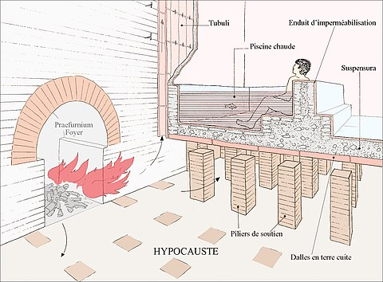

A finales del Siglo I a.C. se implementaron en Roma las termas y baños los
cuales tenían principios parecidos a la climatización radiante, las termas
romanas albergaban diversas estancias en su disposición y, dentro de la
diversidad, fueron similares en todo el Imperio. Algunos establecimientos
termales ofrecieron el mínimo de servicios y no disponían de algunas salas
como la fría o la caliente debido a sus dimensiones modestas. Sin embargo,
las grandes termas imperiales se compusieron de múltiples salas de gran
tamaño y a menudo duplicadas. El interior de las estancias y las piscinas
de agua caliente se realizaba mediante el sistema de hipocausto. El
sistema está basado en la distribución mediante túneles y tubos de agua
caliente y vapor que se extendía por debajo de los suelos de las estancias
y piscinas y era alimentado por una serie de hornos que se hallaban en los
sótanos.

La climatización Radiante en LATAM (Latinoamérica) es muy poco conocida, a pesar de que
los Romanos ya utilizaban el "SUELO RADIANTE" para calentar las Termales y
las casas de la aristocracia. El moderno “SUELO RADIANTE" fue inventado
hace 50 años, la "PARED RADIANTE” hace 40 años, y hace 30 años el
científico Dr. Roberto Messana, inventó el "TECHO RADIANTE", que puede
proporcionar frío o calor según necesidad.
Desde nuestros antepasados
podemos concluir que es un sistema saludable para el cuerpo humano, ya que
tiene Regulación electrónica, gracias a la cual en cada instante existen
la Temperatura y la Humedad Relativa ideales, lo que redunda en el ahorro
de la energía más preciada. En efecto, cuando el cuerpo humano se
beneficia de la relación correcta entre TEMPERATURA y HUMEDAD RELATIVA, se
encuentra en un estado de mínimo consumo de ENERGÍA ELECTROQUÍMICA y, por
ende, el cuerpo y la mente descansan tranquilamente. En consecuencia,
favorece el descanso otorgando a los usuarios un enorme bienestar físico
y psíquico, lo que redunda también en un gran aumento de la productividad.